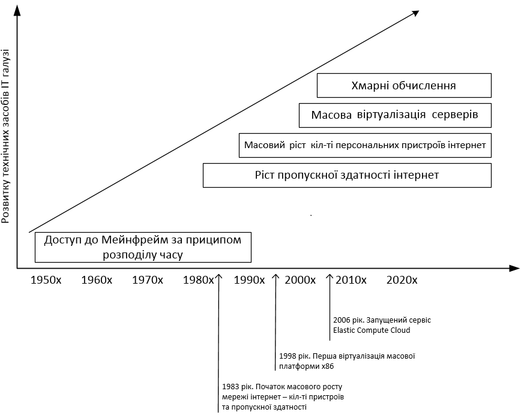
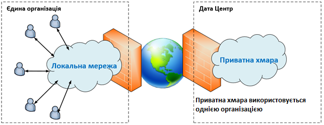
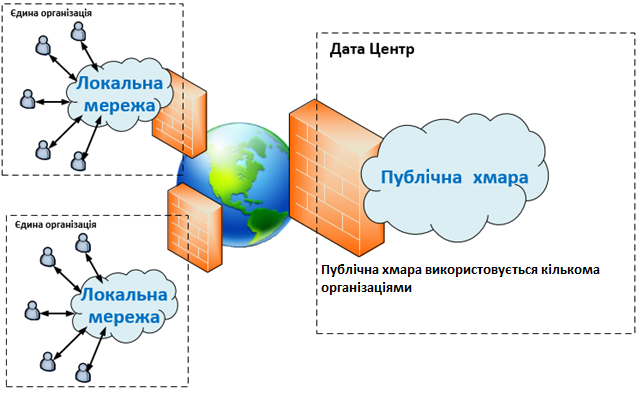
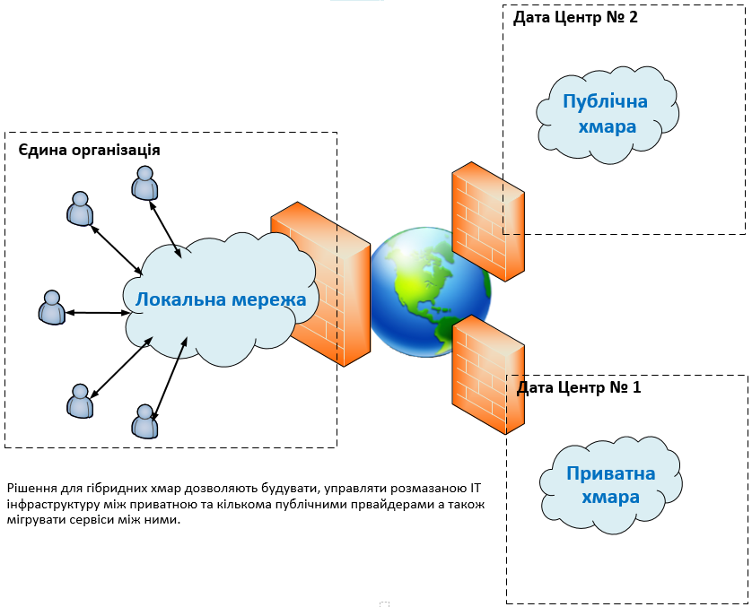

ХМАРНІ ОБЧИСЛЕННЯ
Хмарні обчислення є моделлю обчислювальної інфраструктури, яка дозволяє користувачам отримувати доступ до обчислювальних ресурсів через Інтернет. Ця технологія заснована на ідеї використання великої кількості вузлів обчислювальної мережі, які працюють разом для надання послуг. 
Розвиток IT-галузі
МОДЕЛІ РОЗГОРТАННЯ
Обчислювальна хмара може бути розгорнута як: приватна, публічна, громадська або гібридна. Приватна хмара (англ. private cloud) - це хмарна інфраструктура, яка призначена для використання виключно однією організацією, що включає декілька користувачів (наприклад, підрозділів). Приватна хмара може перебувати у власності, керуванні та експлуатації як самої організації, так і третьої сторони (чи деякої їх комбінації). Така хмара може фізично знаходитись як в, так і поза юрисдикцією власника
Приклад приватної хмари
Публічна хмара (англ. public cloud) - це хмарна інфраструктура, яка призначена для вільного використання широким загалом. Публічна хмара може перебувати у власності, керуванні та експлуатації комерційних, академічних (освітніх та наукових) або державних організацій (чи будь-якої їх комбінації). Публічна хмара перебуває в юрисдикції постачальника хмарних послуг.
Приклад публічної хмари
Гібридна хмара (англ. hybrid cloud) - це хмарна інфраструктура, що складається з двох або більше різних хмарних інфраструктур (приватних, громадських або публічних), які залишаються унікальними сутностями, але з’єднанні між собою стандартизованими або приватними технологіями, що уможливлюють переносимість даних та прикладних програм (наприклад, використання ресурсів публічної хмари для балансування навантаження між хмарами).
Приклад гібридної хмари
ТЕСТ НА ТЕМУ ХМАРНІ ОБЧИСЛЕННЯ
Loading...